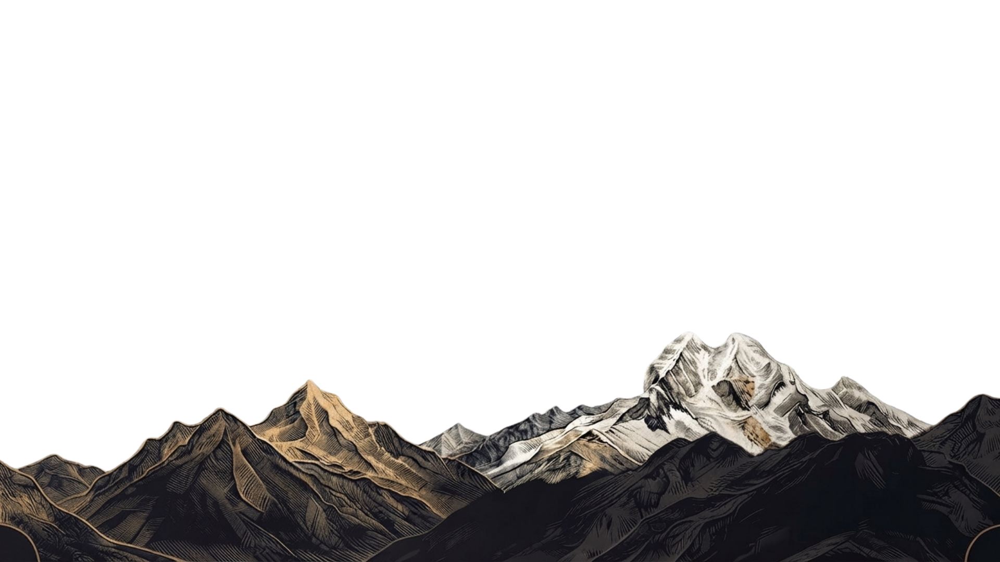

Reconstruir
Reunir en un solo relato lo que la geología, la arqueología y la glaciología han descubierto sobre el Callejón de Huaylas, y ordenarlo en una línea de tiempo comprensible.
Proyecto
Ciencia · Memoria · Sociedad
El recorrido
01/16
—
—
—
Próxima fecha
La gira continúa. Una nueva generación escuchará cómo se levantaron las montañas que ven cada mañana desde su ventana.
Qué es
Vamos más allá de una charla académica o un documental proyectado. Este es un relato construido a partir de cientos de artículos científicos para convertirse en un viaje inmersivo por el tiempo profundo.
La presentación se adapta al lugar que la recibe: auditorios, salones municipales, patios, casonas y espacios abiertos. Cada sede le cambia el cuerpo, pero no la pregunta de fondo.

Aquí las cordilleras dejan de ser apenas un paisaje bonito para revelarse como uno de los capítulos más importantes de la historia del planeta.
Meverick Jeampiere · creador de la obraReunir en un solo relato lo que la geología, la arqueología y la glaciología han descubierto sobre el Callejón de Huaylas, y ordenarlo en una línea de tiempo comprensible.
Que el conocimiento producido sobre este territorio regrese a quienes lo habitan, con rigor pero también con calidez. Cuando eso ocurre, la ciencia deja de sentirse lejana.
Niños, jóvenes, autoridades, especialistas y sectores que años atrás estuvieron enfrentados, sentados en la misma sala frente a una misma historia.
Pasar de esperar el desastre a ser una sociedad que decide mejor, gestiona su riesgo y crea tecnología para el futuro de sus cordilleras.
Más de 100 millones de años bajo nuestros pies
El Perú republicano tiene poco más de doscientos años; el río Santa, cerca de siete millones. Contemplar el tiempo profundo de ambas cordilleras nos obliga a replantear una pregunta esencial: ¿este territorio nos pertenece o somos nosotros quienes le pertenecemos?.
Equipo interdisciplinario internacional
Lo que abrió la gira
Cada fecha deja algo detrás: un pueblo que se organiza para limpiar su río, una dirección regional que se compromete a llevar el material a sus UGEL, un guía veterano que quiere dedicarle una sala de museo. Estas son las líneas de trabajo que nacieron del recorrido.
Gracias a
Certificado
CONFERENCIA · DOCUMENTAL · MUSICAL
.png)

CONFERENCIA · DOCUMENTAL · MUSICAL
Otorgado a
Por su participación en
Nombre de la conferencia
realizada el día ... de ... del ... en ...
Meverick Jeampiere
CREADOR Y DIRECTOR DEL PROYECTO
Segunda persona
INSTITUCIÓN ANFITRIONA
Al ingresar tus datos, se emitirá automáticamente tu certificado digital que valida tu asistencia y participación en las ponencias.